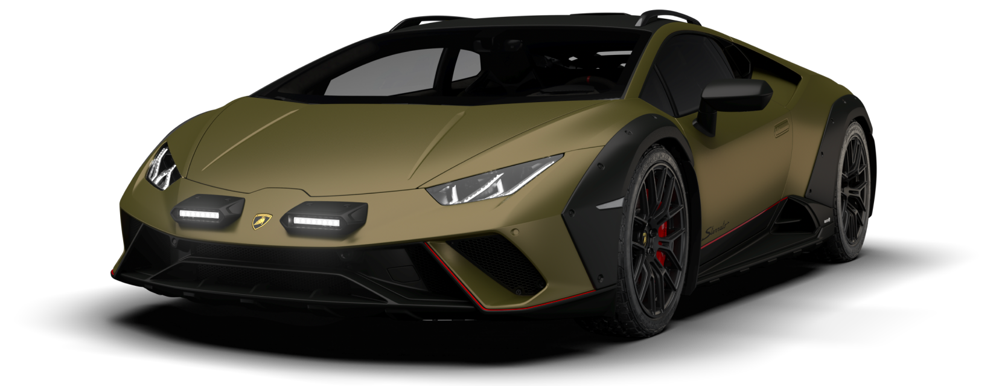

Résumé :
La Huracán Sterrato ouvre une nouvelle frontière du plaisir de conduire. Il s’agit de la première supersportive conçue pour oser même lorsque l’asphalte prend fin. Équipée d’une version dédiée du système Lamborghini Dinamica Veicolo Integrata (LDVI), avec des calibrages spécifiques pour les modes Strada et Sport, elle introduit le mode Rally. Telle une œuvre d’art avant-gardiste, elle représente l’innovation : une interprétation inédite du concept de supersportive.
Date de publication : 8 octobre 2025
HURACAN STERRATO
La Lamborghini Huracán Sterrato est une version inédite et audacieuse de la célèbre Huracán, pensée pour combiner la performance légendaire de Lamborghini avec des capacités tout-terrain. Cette supercar unique en son genre repousse les limites de l’ingénierie automobile en offrant la puissance et le design emblématiques de la marque italienne tout en permettant de rouler sur des routes plus accidentées ou même des sentiers légers.
Un moteur puissant et polyvalent
La Huracán Sterrato conserve le moteur V10 atmosphérique de 5,2 litres, développant environ 640 chevaux selon la version. La puissance est transmise aux quatre roues via le système de traction intégrale emblématique de Lamborghini et une boîte de vitesses à double embrayage. Cela permet des accélérations fulgurantes, avec un 0 à 100 km/h en environ 3,6 secondes, tout en conservant une maniabilité et un contrôle optimaux même sur des surfaces moins adhérentes.
Pour s’adapter au tout-terrain léger, la suspension a été relevée et renforcée, avec une garde au sol accrue et des amortisseurs ajustés pour absorber les chocs. Les jantes sont équipées de pneus spéciaux offrant une meilleure adhérence sur gravier ou terre, tout en conservant la sportivité et l’agilité typiques des modèles Huracán.
Un design agressif et fonctionnel
La Lamborghini Huracán Sterrato se distingue par un look résolument audacieux : des protections supplémentaires sur les bas de caisse et les passages de roues, un aileron arrière légèrement surélevé pour une meilleure stabilité, et une calandre avant retravaillée pour protéger le moteur et le système de refroidissement. Les matériaux légers et résistants utilisés permettent de garder un poids maîtrisé tout en renforçant la durabilité de la voiture.
Une expérience unique pour les amateurs de sensations fortes
Rouler avec la Huracán Sterrato, c’est profiter d’une supercar de route dans un contexte plus aventureux. Le conducteur bénéficie du son envoûtant du V10, de la précision des systèmes électroniques de contrôle et d’une position de conduite qui inspire confiance même sur les chemins accidentés. Chaque virage et chaque dénivelé deviennent une opportunité de ressentir le dynamisme et la puissance de cette supercar hors norme.
En résumé, la Lamborghini Huracán Sterrato est une fusion parfaite entre performance sportive et capacités tout-terrain. Elle démontre que Lamborghini peut allier audace, innovation et plaisir de conduite, tout en offrant une expérience unique aux passionnés d’automobile qui recherchent l’excitation et la polyvalence sur la route et en dehors.
Pour plus d'informations